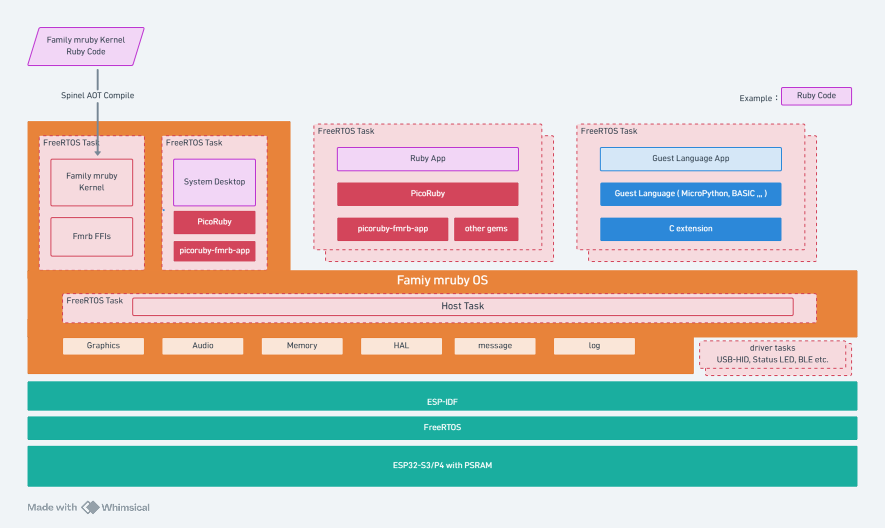

アーキテクチャ¶
Family mruby は、FreeRTOS の上に載った小さな多 VM オペレーティングシステムです。複数の スクリプト VM が並んで動き、FreeRTOS のタスク 1 つに VM 1 つ、それぞれが自分のヒープを 持ちます。だから 1 つのアプリがメモリを使い切っても、落ちても、システム全体は道連れに なりません。

タスク 1 つに VM 1 つ¶
設計の原則は 1 タスク = 1 VM です。各 VM は自分のスタック、自分のメモリ領域、自分の 確保用ハンドルを持ちます。この隔離があるから、書きかけのプログラムをデスクトップの隣で 動かしても安全です。
| 同時に動くユーザアプリ | 3 |
| アプリ 1 つあたりのヒープ | 512KB。large_memory = 1 で 1MB |
| 言語 | Ruby (PicoRuby)、BASIC、MicroPython、Lua |
領域を分けているのは整理のためだけではありません。メモリの断片化は原因となったアプリの 中に留まり、アプリが終わればその領域はまるごと回収されます。
カーネルは「コンパイルされた Ruby」¶
2.0 での変更点です。カーネルとデスクトップは Ruby で書かれていますが、もう解釈実行では ありません。同じソースを別の方式で機械語に事前コンパイルしています。VM で動かしていた ときと比べて、入力の遅れが大きく減りました。
利用者が書くアプリは、これまでどおり PicoRuby の VM で動きます。コンパイルされるのは システム自身の Ruby だけです。
ハードウェアの形は 2 つ¶
同じ OS が、まったく違う 2 つの構成で動きます。
Modern — 1 個のチップが全部やる¶
ESP32-P4 ── OS、VM、描画、音、入力、USB ホスト
│
├── MIPI-DSI 液晶 (1280x720)。426x240 のバッファを PPA で拡大
├── I2S コーデック、APU エミュレータ
├── GT911 タッチ、Tab5 Keyboard (I2C)、USB HID ホスト
└── ESP32-C6 (SDIO) ── WiFi + BLE
描画も音も本体の中で完結します。P4 が自分でバッファを合成し、PPA が液晶の大きさに 拡大します。話しかける相手のチップがいないので、同じ Ruby アプリでも描画が速くなります。
Retro — 2 個のチップで分担する¶
ESP32-S3 ── OS、VM、入力、USB ホスト、WiFi/BLE
│
│ UART, 921600 bps, CTS/RTS フロー制御
▼
ESP32-WROVER ── 描画 + 音
├── NTSC コンポジット出力 (LovyanGFX CVBS)
└── ファミコン風 APU エミュレータ、I2S DAC
S3 が描画と音の命令をシリアルで送り、WROVER がそれをコンポジット映像と音声にします。 チップは 2 つとも書き込む必要があり、両方の版を揃える必要があります。この間のやりとりが 決められた手順だからです。
アプリから見えるもの¶
上のことは何も見えません。描画も音も周辺機器も、両機種で同じ呼び方です。片方ではその
呼び出しが手元の描画部に渡り、もう片方では UART に載って送られる、という違いだけです。
画面の大きさを決め打ちせず、配線を FmrbConst::BOARD で分けておけば、同じアプリが
どちらでもそのまま動きます。
ハードウェアはシステム側が持ち、GPIO・I2C・RMT・ファイルは代理を通して使います。だから 複数の VM が同じバスを取り合わずに使えます。
開発の対象¶
同じソースから 3 つのビルドが出ます。
| 対象 | 内容 |
|---|---|
esp32 / Modern |
ESP32-P4 (M5Stack Tab5) |
esp32 / Retro |
ESP32-S3 + ESP32-WROVER (narya-board) |
linux |
システム全体を Linux のプロセスとして動かします。画面は SDL2。シミュレータ を参照 |
Linux 版は模擬品ではありません。本物のカーネル、本物のデスクトップ、本物のアプリが動き、 下のドライバだけが差し替わっています。作業の大半は実機に触れる前にここで済みます。